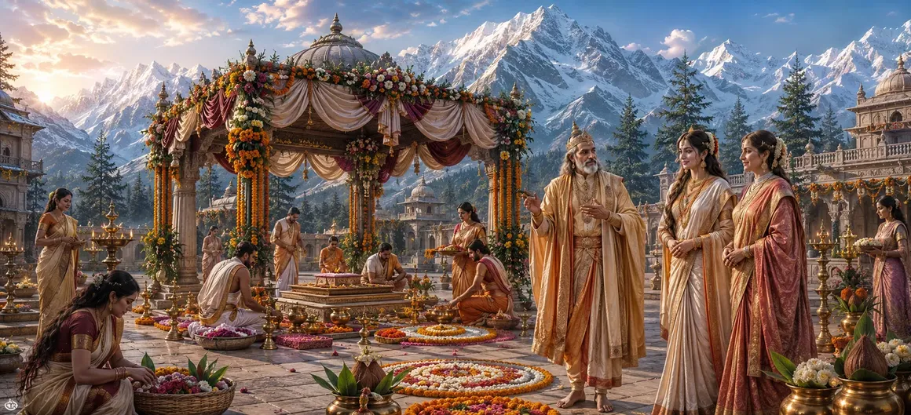

With Pārvatī safely returned and the acceptance of Lord Shiva confirmed, excitement spread throughout the kingdom of Himālaya. The long-awaited union of Shiva and Pārvatī was now approaching, and preparations began for a wedding unlike any ever witnessed in the three worlds. Kings, sages, celestial beings, and devotees all anticipated the sacred event that would unite Shiva and Shakti.
The announcement of the forthcoming marriage brought immense happiness to the people of Himālaya’s kingdom. Streets, homes, and public gathering places became filled with celebration as everyone prepared for the sacred occasion.
King Himālaya personally supervised the arrangements for the wedding. Determined to honor both Shiva and his beloved daughter, he ensured that every preparation reflected devotion, dignity, and generosity.
Queen Menā devoted herself to preparing for her daughter’s wedding. She oversaw arrangements within the palace and ensured that everything necessary for the sacred ceremony would be ready in proper time.
Beautiful decorations appeared throughout the kingdom. Banners, flowers, sacred symbols, and festive ornaments transformed the land into a place worthy of hosting a divine celebration.
The great sages who understood the cosmic significance of this marriage eagerly awaited the ceremony. They recognized that the union of Shiva and Pārvatī would bring blessings to all beings and help fulfill divine purposes.
News of the divine wedding spread beyond the earthly realm. The gods looked forward to attending the sacred event, knowing that this union would influence the destiny of the cosmos and bring great benefit to all creation.
The forthcoming marriage was not merely a royal celebration. It represented the eternal union of Shiva and Shakti, the harmony of consciousness and divine energy upon which the universe itself depends.
Sacred events deserve thoughtful and devoted preparation.
Love and dedication strengthen every sacred responsibility.
Some events serve a higher purpose beyond worldly celebration.
As the preparations continued, excitement grew with each passing day. Everyone eagerly awaited the arrival of the auspicious moment when Lord Shiva would arrive to marry Goddess Pārvatī.
Just as the kingdom carefully prepared for the divine wedding, spiritual seekers must prepare their hearts for divine grace. Patience, devotion, and purity make one ready for sacred blessings.
Auspicious signs appeared throughout the land. The people regarded these signs as indications that the divine wedding had already begun attracting heavenly blessings upon the kingdom.
While preparations progressed within Himālaya’s kingdom, important developments were also about to unfold among the sages. Their role would soon help advance the sacred arrangements toward fulfillment.
"Preparation guided by devotion transforms an ordinary event into a sacred celebration."
The kingdom of Himālaya now prepares for the greatest wedding in creation. As excitement spreads among gods, sages, and devotees, the next stage of the divine arrangements begins. Continue to the next chapter to witness how the Seven Sages approach Himālaya regarding the sacred marriage of Shiva and Pārvatī.